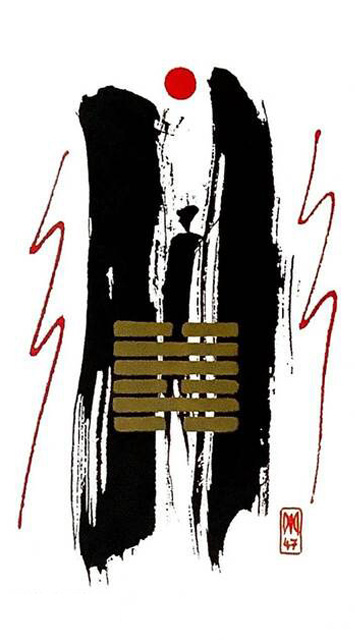

택수곤
4대 난괘 4
택 / 수 -> 연못물이 밑으로 빠지면 물고기가 헐떡거리는 모습 상상
생명수가 고갈되니 못이 비었다좁은 틈 속에 갇힌 사람~발버둥 쳐도 벗어나기 어려운답답하고 괴로운 상황을 표현한 그림
곤란하다.압박.곤경에빠지다.통하지않음.제약.장애.억압.탄압.구속.감금.감옥.우울감.압박감.소외감.배신.함정.구설
연애운
답답하고 갑갑함.대화단절.두려운 마음.자신의 틀
사업운
하루하루가 감옥.지옥같이 느껴짐.억지로 다님.곤경에 처함
속마음
썸마음대로 될 것 같지 않다고 생각하는 마음
1년 이상보기만해도 답답하고 갑갑한 마음
이별 후이러지도 저러지도 못하는 두려운 마음.대책이 없다고 생각하는 마음
솔로연애운
새로운 이성 생길 확률 낮다
건강운
오랜 병은 회복이 힘들다.신경계통.호흡곤란.자궁조심. 스트레스.만성불안.무기력증.공황장애.폐쇄공포증~꼭 병원.심리상담필요